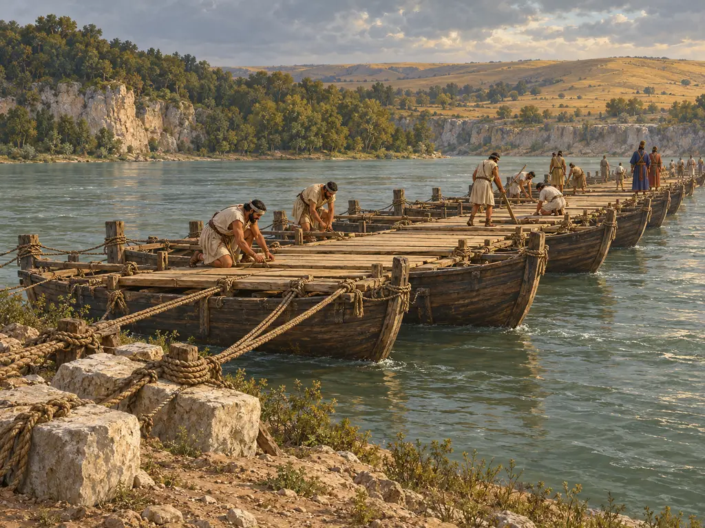
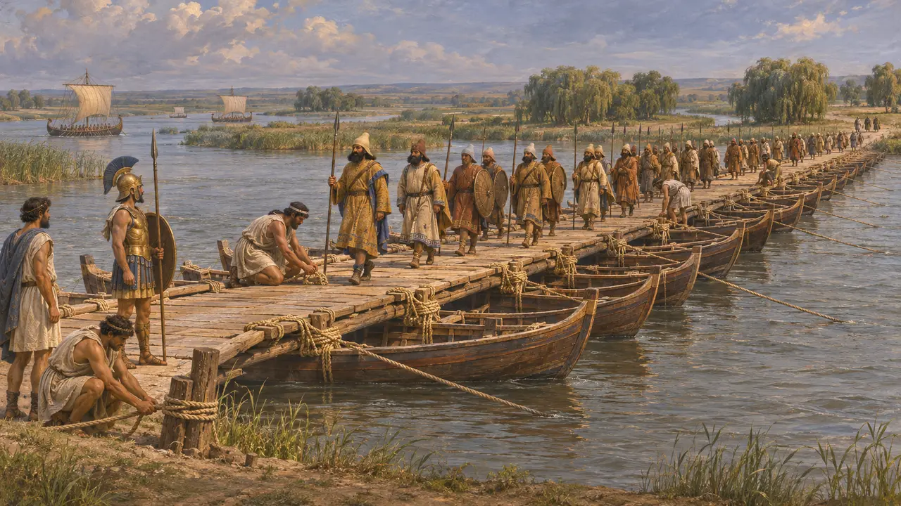
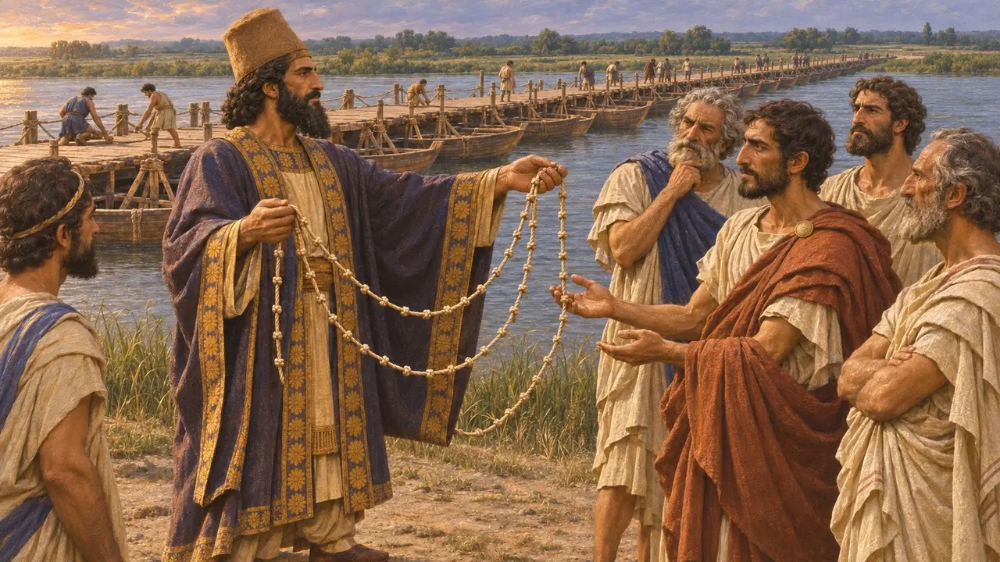
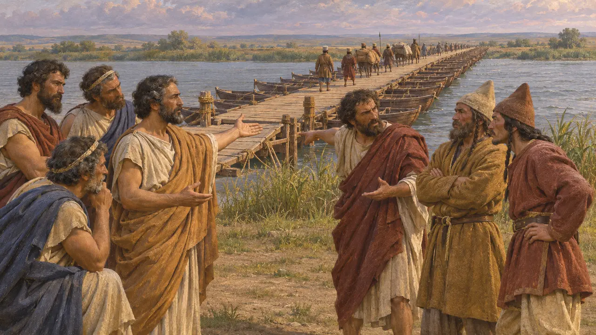
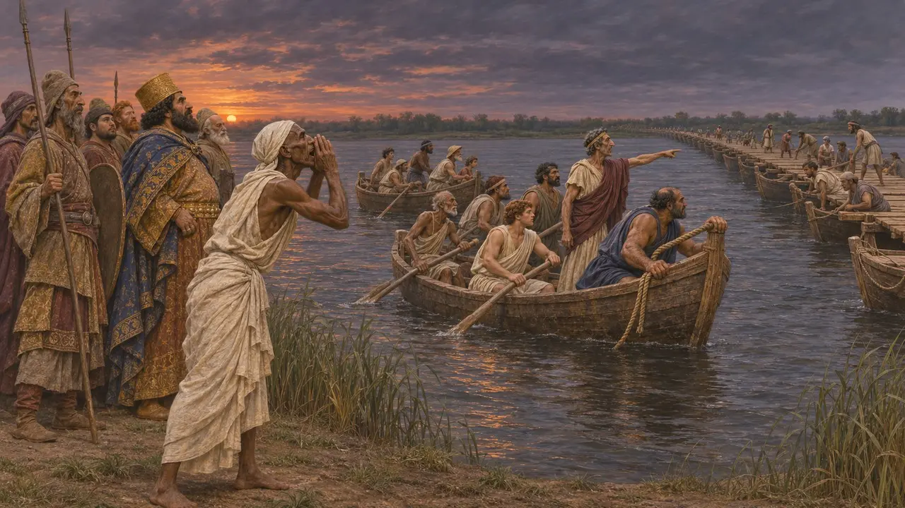
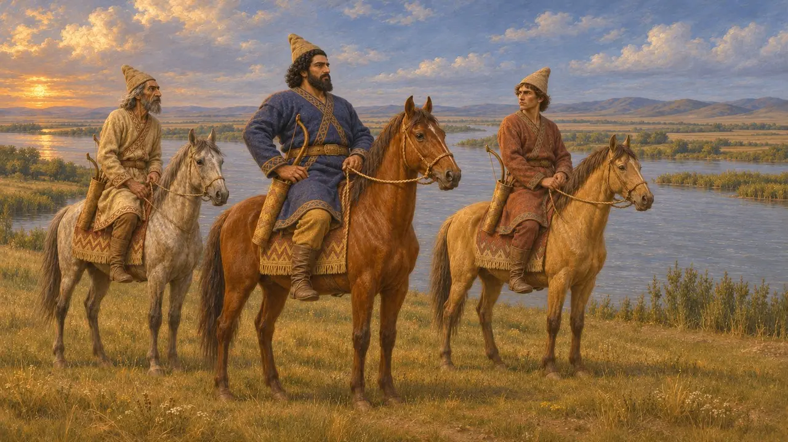

Ponte di barche
Il ponte di barche di Dario sul basso Danubio, costruito da Greci ioni, 513 a.C. circa
Nel gioco: Livello 6: Il ponte di barche
Durante la campagna contro gli Sciti a nord del Mar Nero, Dario fece gettare dalla flotta greca della Ionia e dell'Ellesponto un ponte di barche sull'Istro, il basso Danubio. Erodoto fa di questo ponte il punto di svolta della spedizione: gli Ioni che lo sorvegliavano avrebbero potuto lasciare il Re bloccato in Scizia, e scelsero di non farlo.
Nel gioco: Il ponte viene fondato sulla riva, con il calcare per gli ancoraggi in pietra, le barche ormeggiate e legate una dopo l'altra e un tavolato di legno. Erodoto non fornisce dettagli costruttivi su questo ponte, quindi il gioco li prende in prestito dai suoi ponti sull'Ellesponto (7.36).

Un ponte a due giorni dal mare
Racconto anticoErodoto narra che Dario attraversò il Bosforo sul ponte di Mandrocle e marciò attraverso la Tracia, mentre la flotta greca risaliva l'Istro. Ioni, Eoli e Greci dell'Ellesponto gettarono un ponte sul fiume a due giorni di navigazione dal mare, dove le sue foci si dividono; il luogo esatto è ignoto. Egli stima l'esercito in 700.000 uomini e la flotta in 600 navi, cifre che gli storici ritengono assai esagerate.
Herodotus 4.87-89

La corda dai sessanta nodi
Racconto anticoErodoto narra che Dario dapprima ordinò di smantellare il ponte perché gli equipaggi marciassero con lui, ma Coe di Mitilene gli consigliò di conservarlo come via di ritorno. Dario allora fece sessanta nodi in una corda e disse ai tiranni ioni di scioglierne uno al giorno. Se non fosse tornato quando i nodi fossero finiti, dovevano salpare per casa. Coe fu poi ricompensato con il governo di Mitilene.
Herodotus 4.97-98; 5.11

Il dibattito al ponte
ContesoErodoto racconta che gli Sciti raggiunsero il ponte prima dei Persiani in ritirata e incitarono i Greci a distruggerlo. Milziade del Chersoneso li appoggiò, ma Istieo di Mileto sostenne che i tiranni dovevano il loro potere a Dario, e gli altri gli diedero ragione. Molti storici ritengono che la proposta di Milziade sia un racconto nato più tardi ad Atene per onorarlo, dato che in seguito Dario lo lasciò al suo posto.
Herodotus 4.136-139

Il ritorno del Re
Racconto anticoSecondo Erodoto, gli Ioni smontarono soltanto la campata sul lato scita, per apparire obbedienti. Quando i Persiani giunsero di notte e trovarono il ponte apparentemente scomparso, un Egizio dalla voce possente chiamò Istieo, che riportò indietro le barche. Ctesia racconta una storia diversa, in cui Dario, durante la fuga, distrusse i ponti troppo presto e abbandonò parte del suo esercito agli Sciti.
Herodotus 4.139-142; Ctesias, Persica (epitome in Photius)

Il silenzio delle fonti persiane
Nelle fontiNessuna iscrizione o tavoletta persiana menziona il ponte sull'Istro né descrive la campagna. L'iscrizione funeraria di Dario a Naqsh-e Rostam elenca tra i suoi popoli i Saka d'oltremare. Molti studiosi li collegano agli Sciti d'Europa, il che potrebbe significare che la corte persiana considerò la spedizione un successo.
DNa
Fonti
- Herodotus 4.83-98; 4.118-142; 5.11
- Ctesias, Persica (epitome in Photius)
- DNa
- P. Briant, From Cyrus to Alexander, 2002
- M. A. Dandamaev, A Political History of the Achaemenid Empire, 1989